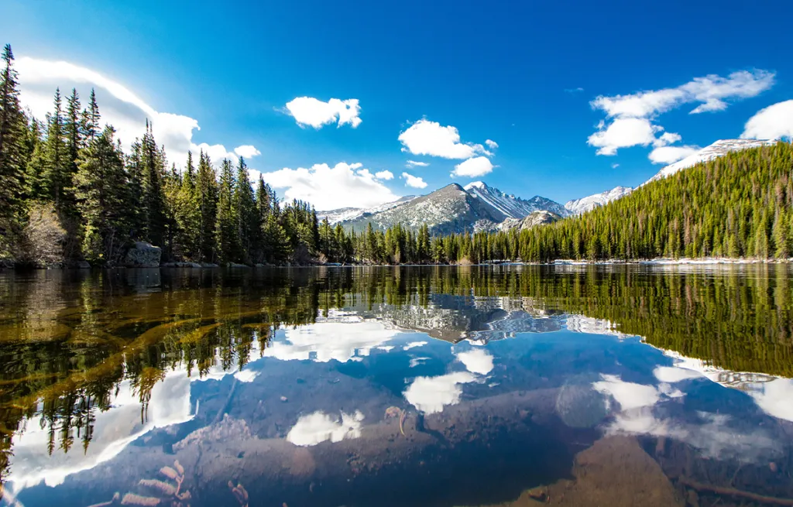

Comprehensive Activity Guide for Colorado
This article provides a comprehensive guide for activities, attractions, and cool visits in Colorado.

Introduction
This guide outlines a broad spectrum of activities and locales to visit in Colorado. The beauty of Colorado lies in its beautiful landscapes, vibrant social scene, wild-west and natural history, and recreational activities that can cater to every lifestyle. Hopefully, the recommended activities/visits below to give you some ideas on how to spend your time while in Colorado.
Activities
Rent a car. It is perfect for exploring Colorado’s stunning scenery and diverse attractions. It offers flexibility, and freedom, allowing you to discover the Rockies, mountain towns, and outdoor activities at your leisure. A rental car provides convenience and comfort, making it the ideal choice for an unforgettable Colorado adventure. There are many places worth visiting, such as the Rocky Mountain National Park, Boulder, Georgetown, Vail, Garden of the Gods, and many more.
Bike at Cherry Creek trail. Cherry Creek trail is the most popular trail in Denver because it starts from the Confluence Park in the heart of Denver and ends 25 miles southeast at the Cherry Creek Dam & Reservoir. Check out what it looks like: https://www.youtube.com/watch?v=rm1inEbk8m4
Go to a Sports game. Basketball, Baseball, Football, or Ice Hockey you pick! The cheapest one is usually baseball and the most expensive is Football.

Watch a Red Rocks Concert. One of the most beautiful theaters in America; whatever you watch there it’s worth it they say. It is an outdoor amphitheater in nature surrounded by red rocks, and the acoustics are amazing. In the summer they do concerts every day there. You can see what they have and book here.
Bristlecone Shooting range. That is a fun activity to do with friends if you want to live something truly American. Bristlecone Shooting Range (video here) is the most popular shooting range in the area.
Buffalo Bill Museumat Lookout Mountain — While Bill’s grave is a touristy spot, you can combine it with a nice hike. The price to enter the museum is $5 (as of May 2023) and it takes about 45 minutes to see, they also show a movie about Buffalo Bill’s life.
Axe Throwing — There are a couple of those in Denver. All are about $30 for an hour. Calling in advance to check the traffic inside is recommended. I went to this one in Colfax. There you also have the option of throwing knives as well, which is a bit more difficult.
Find events that are happening in town via SeatGeek.
Cool Visits
Rocky Mountain National Park [video] — The Rocky Mountain National Park, is an expansive area encompassing over 265,000 acres of diverse ecosystems, from montane forests to alpine tundra. The park is home to a variety of wildlife, including elk, bighorn sheep, and moose. Visitors can enjoy scenic drives, such as the famous Trail Ridge Road, and hike on over 350 miles of trails that offer breathtaking views of the Rockies. The park is also home to the famous Trail Ridge Road, which offers stunning panoramic views.
Union Station and Larimer Square — It is the main train station in Denver. It is a beautiful train station with restaurants and occasionally music. Great place to walk, the vibe outside reminds Central Europe.

Estes Park [video]— Estes Park, is known as the base for the Rocky Mountain National Park. The park itself offers more than 350 miles of hiking trails, varying in difficulty from easy walks to challenging climbs, along with opportunities for camping, wildlife viewing, and bird watching. The town of Estes Park has an elevation of 7,522 feet and maintains a relatively mild climate throughout the year. In the downtown area, you’ll find over 300 shops and restaurants along the Estes Park Riverwalk, making it a lively center for dining and shopping. Visitors can also enjoy local events such as the annual Elk Fest and the Rooftop Rodeo. Estes Park provides a well-rounded experience, combining the tranquility of nature with the convenience of modern amenities. Around that area, is the legendary Stanley Hotel. The Stanley Hotel is known for its luxurious accommodations and elegant architecture, the Stanley Hotel has a history dating back to its founding in 1909. It also gained fame as the inspiration for Stephen King’s novel, “The Shining.” The movie “Dumb And Dumber” was also filmed there. This grand hotel has hosted numerous celebrities and is considered a must-visit destination for those intrigued by its paranormal reputation.
Boulder [video] — The lively streets, charming shops, and lively atmosphere make Pearl Street a must-visit destination in Boulder. As we make our way along the brick-paved pedestrian mall, you’ll get an up-close look at the eclectic shops, delightful restaurants, and cozy cafes that line the street. According to a famous UPenn statistics professor in the Behavioral and Decision Sciences program, “At Boulder is like you are in Switzerland”.

St Mary’s Glacier [video] — Saint Mary’s Glacier, located near Idaho Springs in Clear Creek County, Colorado, is a permanent snowfield, often mistaken as a glacier due to its year-round snow presence. Its beauty and accessibility make it a popular hiking destination. The trailhead begins at 10,400 feet and hikers ascend around 400 feet in under a mile to reach the snowfield. During summer, it’s common to see visitors hiking, fishing in the nearby lake, or even snowboarding and skiing on the snowfield.
The Buffalo Bill Museum and Grave [video] — The Buffalo Bill Museum and Grave in Golden, Colorado, is a captivating destination atop Lookout Mountain. The museum showcases artifacts, exhibits, and memorabilia that illuminate the life of Buffalo Bill Cody, featuring items from his buffalo hunting days, Pony Express involvement, and Wild West Show career. The gravesite, marked by a striking monument, offers panoramic views. This historical site provides a concise and immersive experience, honoring Buffalo Bill’s significant role in shaping the American West’s legacy.
Garden of the Gods [video] — The Garden of the Gods, a public park known for its remarkable red rock formations. These unique sandstone formations were created millions of years ago through geological uplift and erosion, and the park has a rich Native American history, with evidence of human habitation dating back thousands of years. The area was designated a public park in 1909.

- Georgetown [video] — Georgetown, was founded during the Pike’s Peak Gold Rush in 1859. It was named after George Griffith, a prospector who discovered rich silver deposits in the area. Georgetown’s growth soared with the silver boom, and by the 1880s, it had become the center of the mining district. By the late 1890s, silver prices plummeted, leading to economic decline. Despite this, Georgetown managed to survive, thanks in part to its preserved Victorian architecture that drew tourists. Today, it’s known for its historic charm and outdoor recreational opportunities.
Conclusion
This article provides a guide to help you adapt some ideas and activities to your personal circumstances and needs. That would hopefully help you make the best use of your time in Colorado.
Please clap 👏 if you find this post helpful or inspiring. You can read this or see more articles and tips on my website by clicking this link.